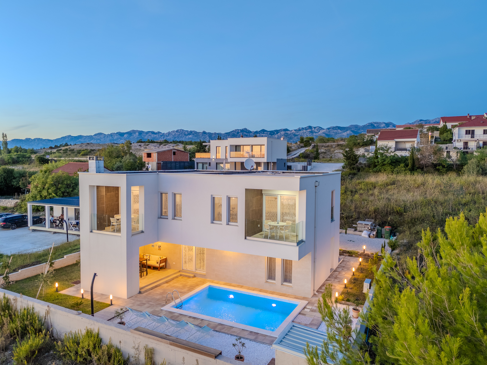

Your escape in Croatia
Enjoy peaceful mornings, crystal clear water and unforgettable sunsets in the heart of Croatia.

Enjoy peaceful mornings, crystal clear water and unforgettable sunsets in the heart of Croatia.
Vila Vanda is located in Rtina, Croatia, just a short drive from the city of Zadar. The property features three apartments Vanda, Mila, and Nina, each designed for a comfortable and relaxing stay.
With stunning sea views, unforgettable sunsets, and nearby towns waiting to be explored, Vila Vanda offers the perfect atmosphere for your holiday. Whether you want to unwind by the sea or discover the beauty of the region, this is the ideal place to enjoy your vacation.
Whether you're planning a relaxing getaway, an active holiday, or a quiet escape from everyday life, our holiday home is the ideal place for you.
It is perfectly suited for couples looking for a peaceful retreat, families wanting quality time together, friends enjoying shared adventures, or solo travelers seeking rest and inspiration. The space offers comfort, privacy, and flexibility for every type of stay. No matter your travel style, our home welcomes everyone who wants to slow down, feel at ease, and enjoy a memorable time surrounded by nature and comfort.